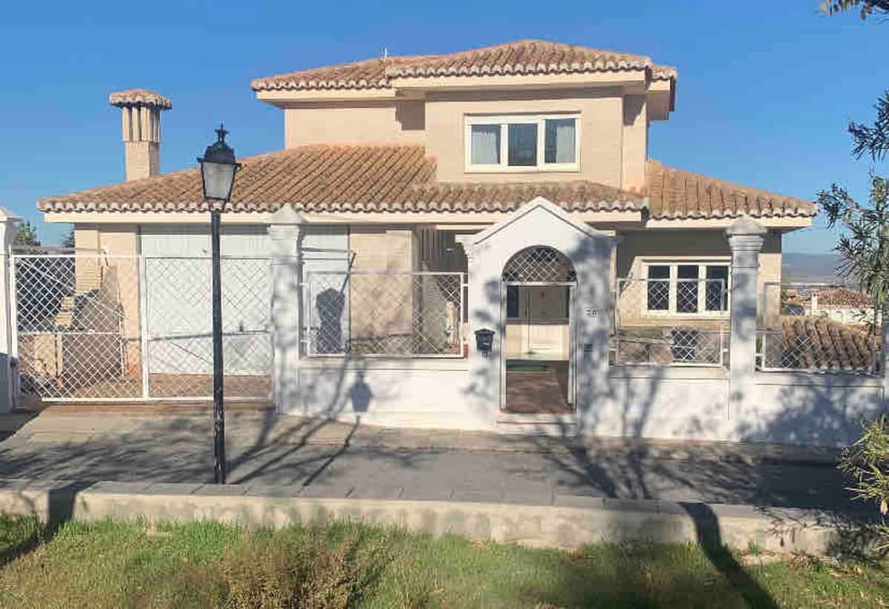
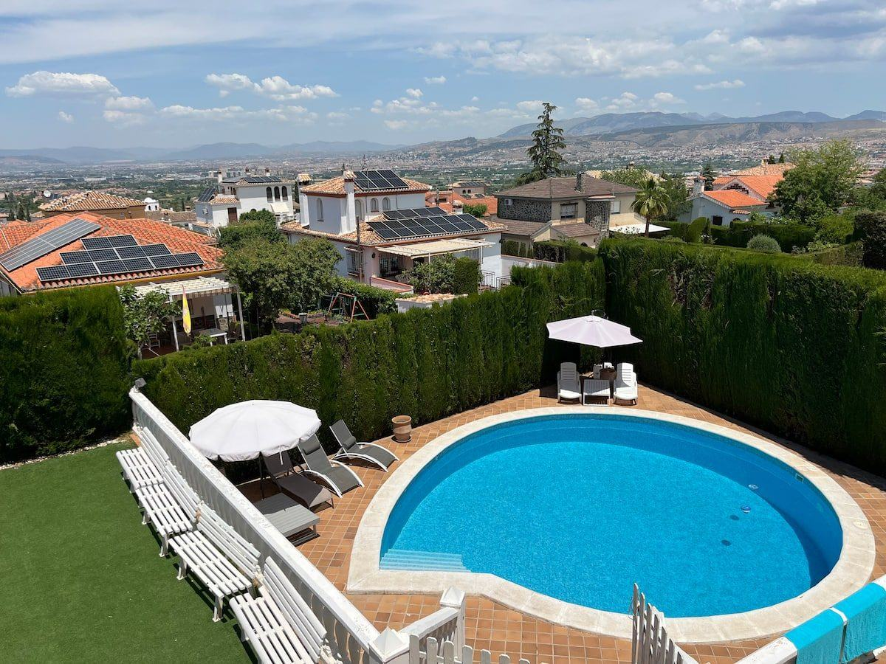
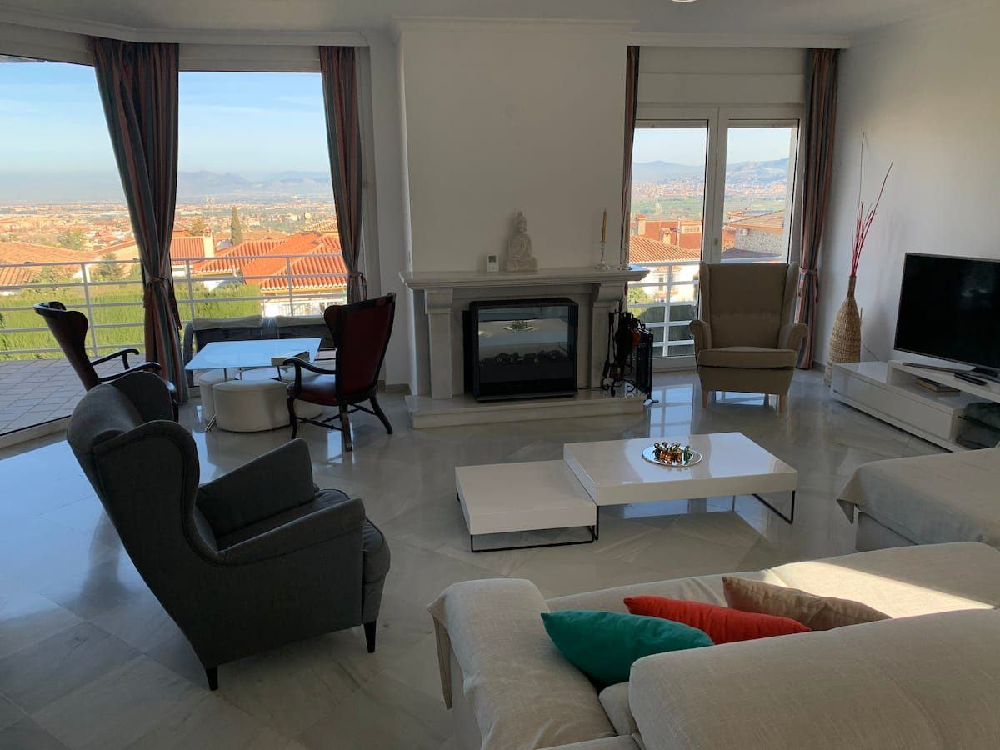
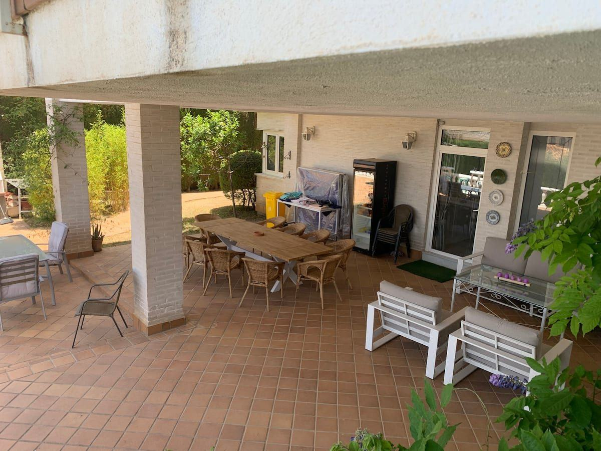
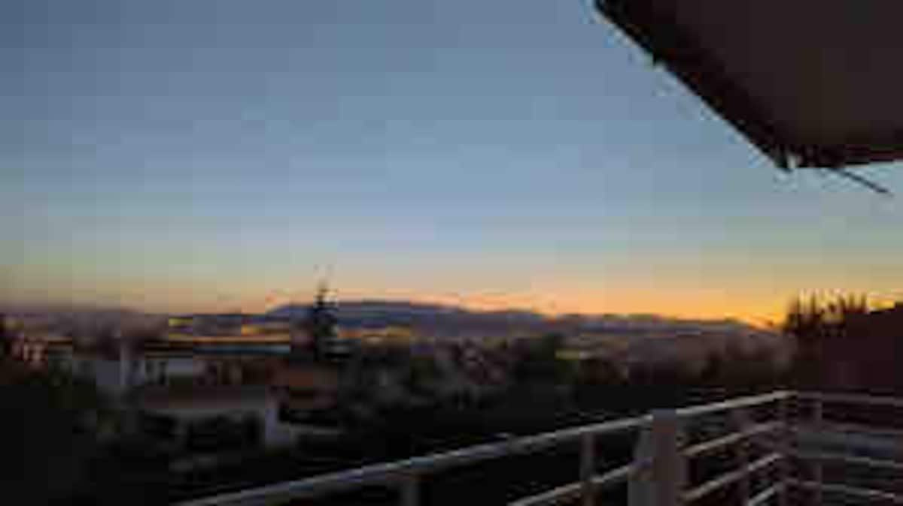
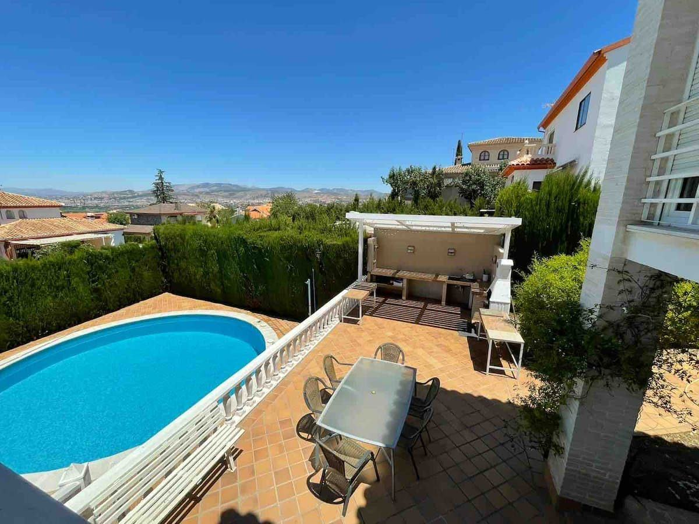
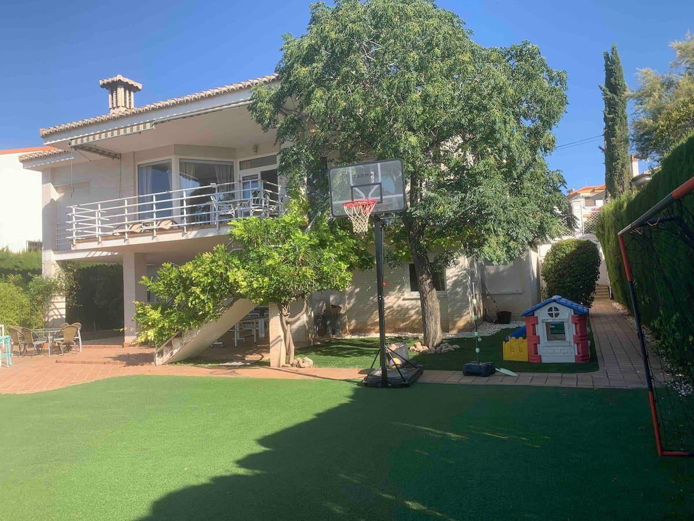

Bienvenidos
Más de mil metros de luz, jardín y sol para compartir mesa, piscina y atardeceres con todos los tuyos.
Recorrido





La llegada
Una calle tranquila y una casa luminosa que te recibe con sol.

Verano de abril a octubre
Una de las pocas piscinas de la zona
Piscina privada de agua salada, disponible las 24 horas, con tumbonas, sombrillas, mesas para comer al aire libre y el valle de Granada de fondo. De día es pura luz; de noche, la piscina se enciende.
- Agua salada, juguetes para la piscina incluidos
- Zona de descanso con tumbonas y hamaca
- Comedor exterior, barbacoa y mesa de ping-pong
- Vallado perimetral en todo el jardín
Los espacios
Cada rincón, pensado para estar juntos
Descansar
7 dormitorios, 17 camas y 5 baños
Habitaciones luminosas con suelos de mármol, ropa de cama de algodón, cortinas opacas y armarios. Un baño o más para que nadie espere por la mañana.

Planes para todas las edades
Jardín, juegos y barbacoa
Más de 1.000 m² de parcela con césped, canasta de baloncesto, casita y estructura de juegos para los más pequeños, mesa de ping-pong y una sala de juegos para los días de lluvia. Los mayores tienen barbacoa, hamaca y sobremesas bajo el porche.
- Parque infantil al aire libre y sala de juegos interior
- Libros y juguetes para todas las edades (0 a 10 años y más)
- Cuna y parque de viaje disponibles previa solicitud
- Barbacoa con parrilla, carbón y brochetas
Comodidades
Han pensado en todo
Estas son algunas de las 84 comodidades de la villa.
Galería
Mira la villa con calma
Favorito de los viajeros
55 evaluaciones · el 95 % con 5 estrellas · Superanfitriona
Nos impresionó el tamaño en cuanto llegamos; en las fotos la propiedad parece mucho más pequeña.
Stephan · junio de 2026 · reseña de huéspedVilla Mare era espaciosa y ofrecía unas vistas impresionantes desde la zona de estar. Han pensado en todo.
Patricia · abril de 2026 · reseña de huéspedEs acogedora y está muy cuidada. Los propietarios son muy simpáticos, atentos y saben cuidar a los inquilinos.
Nerea · agosto de 2026 · reseña de huéspedUbicación
Granada, la sierra y el mar, a mano
En La Zubia, una zona residencial junto al parque natural de Sierra Nevada, con calle muy tranquila y sin apenas tráfico. Supermercados y comercios cerca y bus 175 a Granada.
Antes de reservar
Lo práctico
Llegada y salida
- Llegada a partir de las 16:00
- Salida antes de las 11:00
- Llegada autónoma con caja de llaves
- Se puede dejar el equipaje antes o después
- Estancias de 28 días o más permitidas
Normas de la casa
- Se admiten mascotas
- Se admiten animales de asistencia
- No se permiten fiestas ni molestias a los vecinos: es una zona residencial
Seguridad
- Detector de humo
- Detector de monóxido de carbono
- Extintor y botiquín
- Jardín vallado en todo el perímetro
- Estructura de juego en el exterior
Accesibilidad y aparcamiento
- Aparcamiento gratis en la propiedad y en la calle
- Plaza de aparcamiento para personas con discapacidad
- Ducha sin escalones
- Entrada privada
Te recibe Mar
Superanfitriona con 5 años de experiencia, junto a sus coanfitriones Javier e Iago. Responden en menos de una hora (índice de respuesta del 100 %) y suelen recibir a los huéspedes en persona.
Preguntas frecuentes
Lo que más nos preguntan
¿Cuántas personas caben en la villa?
Más de 16 huéspedes, repartidos en 7 dormitorios con 17 camas y 5 baños. Es ideal para familias numerosas y grupos de amigos.
¿Cuándo se puede usar la piscina?
La piscina es privada, de agua salada y está disponible las 24 horas de abril a octubre, según la temporada. Incluye juguetes para la piscina.
¿Se admiten mascotas?
Sí, se admiten mascotas. El jardín está vallado en todo el perímetro.
¿Se pueden hacer fiestas o celebraciones?
No. La villa está en una zona residencial tranquila y no se permiten fiestas ni molestias a los vecinos.
¿Cómo es la llegada?
La llegada es autónoma, con una caja de seguridad para las llaves, a partir de las 16:00. La salida es antes de las 11:00 y puedes dejar el equipaje antes o después de esas horas.
¿Cuánto se tarda hasta la Alhambra?
Unos 10 minutos hasta la Alhambra y el centro de Granada. También hay un bus (línea 175) cerca de la villa.
¿Hay aparcamiento?
Sí, hay aparcamiento gratuito en la propiedad y también gratis en la calle.
¿Tenéis cuna para bebés?
Sí, hay cuna y parque de viaje disponibles previa solicitud, además de libros y juguetes para distintas edades.
¿Cuál es la política de cancelación y el precio?
Dependen de las fechas elegidas. Te indicamos el precio y las condiciones al responder a tu solicitud de reserva.
Tu próximo verano empieza aquí
Elige tus fechas y escríbenos: reserva directa, sin comisiones de plataformas.
Reservar ahoraReserva directa
Reserva sin comisiones
Elige tus fechas, mira el precio y envíanos tu solicitud. Te confirmamos la disponibilidad y los detalles directamente con nosotros, sin intermediarios.